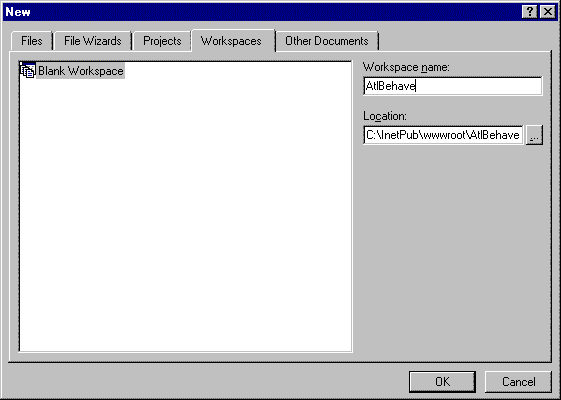
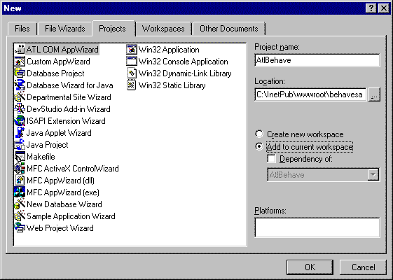
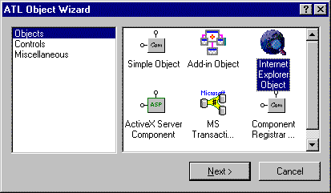

| ||||||
DHTML behaviors can be implemented in script as well as in compiled languages, such as C++. This article focuses on the binary version of behaviors and outlines the steps for creating binary behaviors using Microsoft® Visual C++® 5.0  , Active Template Library (ATL) version 5, and ATL Service Pack 3 (SP3).
, Active Template Library (ATL) version 5, and ATL Service Pack 3 (SP3).
For more information about DHTML behaviors and the concepts and benefits of using them, see Related Topics.
This article is divided into the following sections:
While HTML Components (HTC) can be used to provide a generic way of creating reusable components using scripting languages, binary behaviors can be used to better protect intellectual property. This is because, unlike HTCs, binary behaviors are compiled and, thus, cannot be read using the View Source command in a browser. In addition, binary behaviors do not work through scripting engine interfaces like HTCs do; instead, they directly call the underlying operating system, and this allows binary behaviors to have superior performance relative to HTCs.
Microsoft® Internet Explorer provides C++ interfaces as a means of implementing binary behaviors. With C++ behavior interfaces, a COM object can receive notifications, expose custom events, and access the containing page's DHTML Object Model.
A Web developer can create binary behaviors using C++ behavior interfaces and ATL/COM techniques. Doing this extends the functionality of HTML pages without sacrificing the security of intellectual property. Intranet administrators also can take advantage of the performance of binary behaviors. For example, they can create binary behaviors to implement corporate-wide mandates, unique business rules, and flexible user management techniques for their intranets.
This article assumes that the reader:
For more information on Visual C++ 5.0, Active Template Library (ATL), and general concepts, see Related Topics.
Note Applying SP3 for Visual C++ 5.0 is a prerequisite for the procedural steps in this article.
Following are the steps involved in creating a binary behavior component, using a simple example that implements a mouseover highlight effect.
In the Visual C++ 5.0 development environment, select New from the File menu, and then select the Workspaces tab in the dialog box.
Enter the name of your binary component in the Workspace Name text box (AtlBehave is entered as the workspace name in the following image). Click OK to proceed.
You can define multiple binary behavior objects in a single project file.

The next step is to create an ATL project using the ATL COM AppWizard.
In the Visual C++ 5.0 development environment, select New from the File menu, and then select the Projects tab in the dialog box.
Enter the name of your binary component in the Project Name text box (AtlBehave is entered as the project name in the following image). Next, select the Add to Current Workspace check box, and then click OK to proceed.

The code produced by the ATL COM AppWizard is nothing more than a DLL shell with the ability to register the objects that you will define later. The shell by itself is not the binary behavior object. The shell is a holder for many components. These components share the same code that is available in the shell and can share functionality between them, since they exist in the same DLL.
The ATL COM AppWizard automatically generates the following files:
In your Visual C++ 5.0 development environment, select Options from the Tools menu, and then select the Directories tab in the dialog box. From the drop-down list, select Include Files. Click New to add a new Include File directory. Click Browse, and then select the directory containing the latest Internet Explorer include header files.
Similarly, the library path for your project needs to be augmented with the path to your Internet Explorer libraries. Select Options from the Tools menu, and then select the Directories tab in the dialog box. From the drop-down list, select Library Files. Click New to add a new library directory. Click Browse, and then select the directory containing the latest Internet Explorer library files.
Note The library and include files are available once you've installed the Internet Explorer Software Development Kit. The new library and include paths must be located first in the list.
For information about setting up your Microsoft® Visual Studio® 6.0 development environment, see Related Topics.
Having created the C++ behavior project in Visual Studio, run the ATL Object Wizard to add your behavior object to the project.
To do this, select New ATL Object from the Insert menu, and the ATL Object Wizard dialog box appears. In the left-hand list box, select Objects. In the right-hand list box, select the Internet Explorer Object icon.

Click Next, and the ATL Object Wizard Properties dialog box appears.

Caution Do not highlight the period that separates the two parts of the Prog ID. The wizard will not allow you to type a period in this edit box. If you delete the period, you will have to start over.
The ATL Object Wizard creates the following code and files to demonstrate implementation of the AtlBehave.idl and AtlBehave.cpp files.
// AtlBehave.idl : IDL source for AtlBehave.dll
//
// This file will be processed by the MIDL tool to
// produce the type library (AtlBehave.tlb) and marshalling code.
import "oaidl.idl";
import "ocidl.idl";
[
uuid(140D550C-2290-11D2-AF61-00A0C9C9E6C5),
helpstring("IFactory Interface"),
pointer_default(unique)
]
interface IFactory : IUnknown
{
};
[
uuid(140D550E-2290-11D2-AF61-00A0C9C9E6C5),
helpstring("IBehavior Interface"),
pointer_default(unique)
]
interface IBehavior : IDispatch
{
};
[
object,
uuid(5B3517FB-306F-11D2-AF62-00A0C9C9E6C5),
dual,
helpstring("IEventSink Interface"),
pointer_default(unique)
]
interface IEventSink : IDispatch
{
};
[
uuid(140D54FF-2290-11D2-AF61-00A0C9C9E6C5),
version(1.0),
helpstring("AtlBehave 1.0 Type Library")
]
library ATLBEHAVELib
{
importlib("stdole32.tlb");
importlib("stdole2.tlb");
[
uuid(140D550D-2290-11D2-AF61-00A0C9C9E6C5),
helpstring("Factory Class")
]
coclass Factory
{
[default] interface IFactory;
};
[
uuid(140D550F-2290-11D2-AF61-00A0C9C9E6C5),
helpstring("Behavior Class")
]
coclass Behavior
{
[default] interface IBehavior;
};
[
uuid(5B3517FC-306F-11D2-AF62-00A0C9C9E6C5),
helpstring("EventSink Class")
]
coclass EventSink
{
[default] interface IEventSink;
};
};
// AtlBehave.cpp : Implementation of DLL Exports.
// Note: Proxy/Stub Information
#include "stdafx.h"
#include "resource.h"
#include "AtlBehave.h"
#include "AtlBehave_i.c"
#include "Factory.h"
#include "Behavior.h"
#include "EventSink.h"
CComModule _Module;
BEGIN_OBJECT_MAP(ObjectMap)
OBJECT_ENTRY(CLSID_Factory, CFactory)
OBJECT_ENTRY(CLSID_Behavior, CBehavior)
OBJECT_ENTRY(CLSID_EventSink, CEventSink)
END_OBJECT_MAP()
/////////////////////////////////////////////////////////////////////////////
// DLL Entry Point
extern "C"
BOOL WINAPI DllMain(HINSTANCE hInstance, DWORD dwReason,
LPVOID /*lpReserved*/)
{
if (dwReason == DLL_PROCESS_ATTACH)
{
_Module.Init(ObjectMap, hInstance);
DisableThreadLibraryCalls(hInstance);
}
else if (dwReason == DLL_PROCESS_DETACH)
_Module.Term();
return TRUE; // ok
}
/////////////////////////////////////////////////////////////////////////////
// Used to determine whether the DLL can be unloaded by OLE
STDAPI DllCanUnloadNow(void)
{
return (_Module.GetLockCount()==0) ? S_OK : S_FALSE;
}
/////////////////////////////////////////////////////////////////////////////
// Returns a class factory to create an object of the requested type
STDAPI DllGetClassObject(REFCLSID rclsid, REFIID riid, LPVOID* ppv)
{
return _Module.GetClassObject(rclsid, riid, ppv);
}
/////////////////////////////////////////////////////////////////////////////
// DllRegisterServer - Adds entries to the system registry
STDAPI DllRegisterServer(void)
{
// registers object, typelib and all interfaces in typelib
return _Module.RegisterServer(TRUE);
}
/////////////////////////////////////////////////////////////////////////////
// DllUnregisterServer - Removes entries from the system registry
STDAPI DllUnregisterServer(void)
{
_Module.UnregisterServer();
return S_OK;
}
Having generated the basic ATL project, you can continue implementing your binary behavior interface. A handful of interfaces might be of interest to you at this point. These interfaces are discussed next, beginning with the IElementBehavior interface.
The IElementBehavior interface is used by MSHTML to provide status notifications regarding the DHTML behavior and the document to which it is attached. MSHTML obtains the interface through a call to IElementBehaviorFactory::FindBehavior.
In your code, check for the notification of interest. The identifiers for these notifications, such as BEHAVIOREVENT_DOCUMENTREADY, are defined in Mshtml.h. Additional identifiers, such as DIID_HTMLElementEvents, are also defined in Mshtml.h.
The following table includes the IElementBehavior methods.
| Detach | Notified before the document unloads its contents. |
| Init | Notified with the IElementBehaviorSite interface immediately after the IElementBehavior interface is obtained from the IElementBehaviorFactory::FindBehavior method. |
| Notify | Notified with information about the parsing of the document and the behavior component. |
The ATL Object Wizard creates the following example code and files to demonstrate implementation of the Notify, Init, and Detach methods.
STDMETHODIMP CBehavior::Notify(
DWORD event,
VARIANT* pVar)
{
HRESULThr=S_OK;
CComPtrspElem;
switch ( event )
{
case BEHAVIOREVENT_CONTENTCHANGE:
// End tag of element has been parsed (we can get at attributes)
break;
case BEHAVIOREVENT_DOCUMENTREADY:
// HTML document has been parsed (we can get at the document object model)
if ( m_spSite )
{
hr = m_spSite->GetElement( &m_spElem );
if ( SUCCEEDED(hr) )
{
// Create and connect our event sink
hr = CComObject::CreateInstance( &m_pEventSink );
if ( SUCCEEDED(hr) )
{
CComPtrspStyle;
HRESULThr;
hr = m_spElem->get_style( &spStyle );
if ( SUCCEEDED(hr) )
{
spStyle->get_color( &m_varColor );
spStyle->get_backgroundColor( &m_varBackColor );
}
m_pEventSink->m_pBehavior = this;
hr = AtlAdvise( m_spElem, m_pEventSink,
DIID_HTMLElementEvents,
&m_dwCookie );
}
}
}
default:
break;
}
return S_OK;
}
// Behavior.cpp : Implementation of CBehavior
#include "stdafx.h"
#include "AtlBehave.h"
#include "EventSink.h"
#include "Behavior.h"
STDMETHODIMP CBehavior::Init(IElementBehaviorSite* pBehaviorSite)
{
HRESULThr;
ATLTRACE("IElementBehavior::Init()\n");
// Cache the IElementBehaviorSite interface pointer
m_pSite = pBehaviorSite;
_ASSERTE(m_pSite);
// Cache the IElementBehaviorSiteOM interface pointer
hr = m_pSite->QueryInterface( IID_IElementBehaviorSiteOM, (void**)&m_pOMSite );
_ASSERTE(m_pOMSite);
return S_OK;
}
// Behavior.cpp : Implementation of CBehavior
#include "stdafx.h"
#include "AtlBehave.h"
#include "EventSink.h"
#include "Behavior.h"
/////////////////////////////////////////////////////////////////////////////
// CBehavior
#define DISPID_BKCOLOR 1
#define DISPID_TEXTCOLOR 2
char* CBehavior::m_szMethodNames[] = {"backColor","textColor",NULL};
DISPID CBehavior::m_dispidMethodIDs[] = {DISPID_BKCOLOR,DISPID_TEXTCOLOR,-1};
// IElementBehavior implemenation
STDMETHODIMP CBehavior::Detach(void)
{
// Release cached interface pointers
m_pEventSink->Release();
m_spElem.Release();
m_spOMSite.Release();
return S_OK;
}
The IElementBehaviorFactory interface provides DHTML behavior implementations to the MSHTML component of Internet Explorer 5. When Internet Explorer 5 parses a document and finds a behavior attached to an element, the Mshtml.dll component of Internet Explorer attempts to locate the implementation of that behavior and instantiate it. The MSHTML component calls IServiceProvider::QueryService of the host application. This call uses the unique identifier SID_SHTMLElementBehaviorFactory to locate the IElementBehaviorFactory interface.
Having located this interface, the IElementBehaviorFactory::FindBehavior method is called to instantiate the IElementBehavior interface. The IElementBehaviorFactory::FindBehavior method also provides an IUnknown interface. The IElementBehaviorSite::GetElement method then retrieves the element to which a behavior is bound. If the IElementBehaviorFactory interface is not found on the host, Mshtml.dll checks any HTML object tags that might supply the DHTML behavior component.
Note Alternatively, your C++ hosting application can use IUnknown::QueryInterface to retrieve its IElementBehaviorSite interface, as shown in the following code:
// Factory.cpp : Implementation of CFactory
#include "stdafx.h"
#include "AtlBehave.h"
#include "Factory.h"
/////////////////////////////////////////////////////////////////////////////
// CFactory
STDMETHODIMP CFactory::FindBehavior(
LPOLESTR pchNameSpace,
LPOLESTR pchTagName,
IElementBehaviorSite* pSite,
IElementBehavior** ppBehavior)
{
HRESULThr;
CComObject*pBehavior;
// Create a behavior object
hr = CComObject::CreateInstance( &pBehavior );
if ( SUCCEEDED(hr) )
return pBehavior->QueryInterface( __uuidof(IElementBehavior),
(void**)ppBehavior );
else
return hr;
}
Using the Behavior C++ interfaces, it is possible for behaviors to expose properties and methods.
For example, you can use the Invoke method of your component to create an event sink, and then advise the environment that you are interested in a certain type of notification from the browser, as shown in the following code:
// Create and connect an event sink
hr = CComObject<CEVENTSINK>::CreateInstance( &m_pEventSink
);m_pEventSink->m_pElem = pElem;
hr = AtlAdvise( pElem, m_pEventSink, DIID_HTMLElementEvents,
&m_dwCookie );
Your CEventSink::Invoke method is called when an event is dispatched. If this is an event of interest, you can access the page element using the element pointer m_pElem, and then change the properties of the page element using the m_pElem->get_style of the IHTMLStyle pointer.
// EventSink.cpp : Implementation of CEventSink
#include "stdafx.h"
#include "AtlBehave.h"
#include "Behavior.h"
#include "EventSink.h"
/////////////////////////////////////////////////////////////////////////////
// CEventSink
STDMETHODIMP CEventSink::Invoke(
DISPID dispidMember,
REFIID riid,
LCID lcid,
WORD wFlags,
DISPPARAMS* pdispparams,
VARIANT* pvarResult,
EXCEPINFO* pexcepinfo,
UINT* puArgErr)
{
switch ( dispidMember )
{
case DISPID_HTMLELEMENTEVENTS_ONMOUSEOVER:
OnMouseOver();
break;
case DISPID_HTMLELEMENTEVENTS_ONMOUSEOUT:
OnMouseOut();
break;
default:
break;
}
return S_OK;
}
// Event handlers
void CEventSink::OnMouseOver()
{
if ( m_pBehavior )
m_pBehavior->ShowBehavior();
}
void CEventSink::OnMouseOut()
{
if ( m_pBehavior )
m_pBehavior->Restore();
}
Note A behavior can override an element's default behavior by exposing a property or method of the same name as that which is already defined for the element.
The IObjectSafety interface should be implemented by objects that have interfaces that support untrusted clients (for example, scripts). This allows the owner of the object to specify which interfaces need to be protected from possible untrusted use.
Code signing can guarantee a user that code is trusted. However, allowing ActiveX Controls to be accessed from scripts raises several new security issues. Even if a control is known to be safe in the hands of a user, it is not necessarily safe when automated by an untrusted script. For example, Microsoft® Word is a trusted tool from a reputable source, but a malicious script can use its automation model to delete files on the user's computer, install macro viruses, and worse.
Just as there are two methods for indicating that your control is safe for initialization, there also are two methods for identifying a control as safe for scripting. The first method uses the Component Categories Manager to create the appropriate entries in the system registry (when your control is loaded). Internet Explorer examines the registry prior to loading your control to determine whether these entries appear. The second method implements the IObjectSafety interface on your control. If Internet Explorer determines that your control supports IObjectSafety, it calls the IObjectSafety::SetInterfaceSafetyOptions method prior to loading your control to determine whether it's safe for scripting.
For more information about how to use the Component Categories Manager to identify a control as safe for scripting, see Using the Component Categories Manager. For more information about how to use the IObjectSafety interface to identify a control as safe for scripting, see Supporting the IObjectSafety Interface.
The IObjectSafety interface enables a container to ask a control to make itself safe, or to retrieve the current initialization or scripting capabilities for the control. This interface is defined in the Objsafe.h file. Currently, two capabilities are supported: safe for initialization and safe for scripting. These capabilities correspond to the following bit flags, which are defined in Objsafe.h.
| INTERFACESAFE_FOR_UNTRUSTED_DATA | Specifies that the interface is safe for initialization. |
| INTERFACESAFE_FOR_UNTRUSTED_CALLER | Specifies that the interface is safe for scripting. |
Script engines must support the extensions to run under Internet Explorer. Controls need to implement these extensions only if they want to fully support the Internet Explorer security model.
The following example code applies the mouseover highlight effect to a text box, changing the color of the anchors as the mouse hovers over the text. Note how the text changes the color to blue when hovered over.
if ( dispidMember == DISPID_HTMLELEMENTEVENTS_ONMOUSEOVER )
// an event we care about?
{ // yes, lets get the elements style and modify its color property
IHTMLStyle* pStyle=NULL; HRESULT
hr; hr= m_pElem->get_style(
&pStyle ); if (
SUCCEEDED(hr)
) {
DWORD color;
charbuf[8]; pStyle->get_color( &varColor
);pStyle->get_backgroundColor( &varBackColor );
color = GetSysColor( COLOR_HIGHLIGHTTEXT
); wsprintf( buf, "#%02x%02x%02x", GetRValue(color),
GetGValue(color), GetBValue(color)
);pStyle->put_color( CComVariant("red") );
color = GetSysColor( COLOR_HIGHLIGHT
); wsprintf( buf, "#%02x%02x%02x", GetRValue(color),
GetGValue(color), GetBValue(color)
);pStyle->put_backgroundColor( CComVariant("blue") );
}
}
else if ( dispidMember == DISPID_HTMLELEMENTEVENTS_ONMOUSEOUT )
{
IHTMLStyle* pStyle=
NULL; HRESULT
hr; hr= m_pElem->get_style(
&pStyle ); if (
SUCCEEDED(hr)
){ pStyle->put_color( varColor
);pStyle->put_backgroundColor( varBackColor );
}
DISPIDs for the event set MSHTML Events are also defined in Mshtmdid.h. These events are used in the following example code to change the color of the anchors.
else if ( dispidMember == DISPID_HTMLELEMENTEVENTS_ONMOUSEOUT )
{
IHTMLStyle* pStyle=
NULL; HRESULT
hr; hr= m_pElem->get_style(
&pStyle ); if (
SUCCEEDED(hr)
){ pStyle->put_color( varColor
);pStyle->put_backgroundColor( varBackColor );
}
The following articles provide more information about DHTML behaviors:
The following articles provide more information about Microsoft Visual Studio development:
The following articles provide more information about COM:
Did you find this topic useful? Suggestions for other topics? Write us!
© 1999 Microsoft Corporation. All rights reserved. Terms of use.